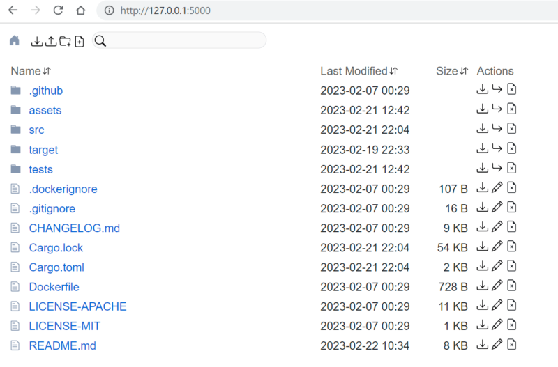

Про недооценённые утилиты - dufs

Иногда бывает такое, что тебе для конкретной задачи не хватает определённого инструмента. Ты его ищешь, ищешь, ищешь, потом уже устаёшь и перестаёшь искать, а спустя несколько лет случайно натыкаешься на него и понимаешь - вот оно! Именно то, что нужно и именно в том виде, который и требовалось. И тогда радость от обретения куда больше, чем если бы ты нашёл его сразу.
Из таких случаев мне навскидку вспомнилось несколько - MySecureShell и tinc, о которых я уже писал , lnav, о котором я возможно ещё напишу, mosh и вот, недавно - dufs.
Итак, что же это такое? dufs - это утилита, которая предоставляет доступ к директории с файлами или к конкретному файлу средствами WebDAV, и http/https. Причём есть описанное API, с помощью которого можно легко и просто манипулировать файлами, есть простенький web интерфейс, возможность скачать содержимое директории как архив, создавать и редактировать текстовые файлы, есть также возможность ограничения доступа для различных пользователей. Всё это упаковано в исполнимый файл размером чуть более 4х мегабайт, что в современных реалиях более, чем приемлемо.
Для чего я использую теперь эту утилиту:
- отправка собранных iso файлов прямо из скрипта сборки с помощью curl в сторону NAS
- возможность быстро получить доступ к нужной директории на удалённом компьютере или смартфоне
- монтирование удалённых ресурсов в локальную файловую систему прямо через virtualhost и nginx, выступающий в роли reverse proxy
- средство для быстрой возможности удаления просмотренного/прослушанного контента на медиа шаре: посмотрел несколько фильмов - быстро пробежался по списку и поудалял прямо со смартфона сидя на диване
- шара для быстрой синхронизации фотографий со смартфона в рамках локальной сети (наелся уже NextCloud - очень хотелось чего-то попроще и побыстрее)
Примеры запуска утилиты приводить не буду, они указаны в README.md проекта достаточно подробно и они достаточно просты. Лучше опишу практическое применение.
Пример запуска в Docker
Это просто/удобно/быстро, если нужно поднять например, сетевой ресурс для синхронизации контента со смартфонов. На всякий случай приведу сразу пример запуска двух вариантов контейнера - с самоподписанным ssl сертификатом (на порту 5001) и без него (на порту 5000). Зачем запускать сервис без сертификата, если можно с ним? Элементарно - можно проксировать обращение на него с другого хоста, на котором запущен nginx в режиме reverse proxy.
Создание самоподписанного (self signed) сертификата:
openssl req -new -newkey rsa:4096 -x509 -sha256 -days 365 -nodes -out ss.crt -keyout ss.key
В директории /opt/dufs создам директорию cert и положу файлы сертификата и ключа, полученные в результате выполнения указанной выше команды туда. Далее создаём файл docker-compose.yaml
version: '3.3'
services:
dufs:
image: sigoden/dufs
hostname: dufs
container_name: dufs
restart: always
environment:
- TZ=Asia/Yekaterinburg
volumes:
- './data:/data'
ports:
- '5000:5000'
user: 10001:10001
command: /data -A --enable-cors -a user1:pass1@/directory1:rw -a user2:pass2@/directory2:rw
logging:
driver: "json-file"
options:
max-size: "64m"
dufstls:
image: sigoden/dufs
hostname: dufstls
container_name: dufstls
restart: always
environment:
- TZ=Asia/Yekaterinburg
volumes:
- './data:/data'
- './cert:/cert'
ports:
- '5001:5000'
user: 10001:10001
command: /data -A --enable-cors --tls-cert /cert/ss.crt --tls-key /cert/ss.key -a user1:pass1@/directory1:rw -a user2:pass2@/directory2:rw
logging:
driver: "json-file"
options:
max-size: "64m"
Что сразу может броситься в глаза - использование пароля открытым текстом. Да, в документации из репозитория заявлено, что можно использовать хеши sha-512:
# DUFS supports the use of sha-512 hashed password.
# Create hashed password
$ mkpasswd -m sha-512 -s
Password: 123456
$6$qCAVUG7yn7t/hH4d$BWm8r5MoDywNmDP/J3V2S2a6flmKHC1IpblfoqZfuK.LtLBZ0KFXP9QIfJP8RqL8MCw4isdheoAMTuwOz.pAO/
# Use hashed password
dufs -a 'admin:$6$qCAVUG7yn7t/hH4d$BWm8r5MoDywNmDP/J3V2S2a6flmKHC1IpblfoqZfuK.LtLBZ0KFXP9QIfJP8RqL8MCw4isdheoAMTuwOz.pAO/@/:rw'
# Two important things for hashed passwords:
# 1. Dufs only supports sha-512 hashed passwords, so ensure that the password string always starts with `$6$`.
# 2. Digest authentication does not function properly with hashed passwords.
Но как видим, нас предупреждают сразу, что аутентификация не будет работать с данным типом паролей. Я проверил с basic авторизацией в web интерфейсе и действительно, не работает. Будем надеяться, что в будущих версиях это исправят. В любом случае я не собираюсь использовать этот сервис в качестве production, а для домашних нужд в закрытой сети и этого более, чем достаточно. Не забудьте изменить соответствующим образом владельца и права на docker-compose.yml, если дорожите этими паролями.
Также обратите внимание на строки "user: 10001:10001" - от имени данного пользователя будет запущен сервис dufs и соответственно доступ он сможет получить лишь к тем директориям и файлам, которые имеют соответствующие uid и gid.
Использование на мобильном устройстве
Чем полезен dufs для мобильного приложения - можно использовать его для синхронизации фото, скачанных файлов и любой другой информации или использовать как любой облачный диск. Есть два полезных приложения для этого.
Первое (и это тоже в своём роде недооценённая утилита, но уже для Android) - это FolderSync - масса настроек, односторонняя и двусторонняя синхронизация, маски, привязка к конкретным сетям wifi, планирование - одним словом я этой утилитой пользуюсь уже не помню сколько лет и очень доволен. И да, у неё есть масса поддерживаемых типов удалённого хранилища, WebDAV входит в их число. Так что и какой-нибудь яндекс диск также можно при желании подключить. Самое главное, что делает это приложение - незаметно для меня проводит синхронизацию, ведёт лог синхронизаций и делает это исключительно когда я дома, не пытаясь насиловать 4g соединение.
Второе приложение - X-Plore. Им я пользовался ещё в эпоху расцвета Symbian смартфонов, а это было примерно около 20 лет тому назад. Затем это приложение перекочевало и на Android, чему я был несказанно рад. В нём тоже есть возможность подключить "облачные" сетевые ресурсы, в том числе и по протоколу WebDAV. С мобильного устройства удобно подключиться к шаре извне, когда находишься не дома. Например, если нужно найти какой-нибудь файл или документ, находящийся на домашнем сервере.
Есть правда одно но - у FolderSync есть как бесплатная, так и платная версия. У X-Plore тоже. Я когда-то честно купил и первое и второе из уважения к разработчикам, но в свете санкций теперь честно приобретённое стало недоступно жителям Белоруси и РФ. Для решения этого вопроса тоже существуют различные обходные пути, но приводить их тут я не буду.
Использование с внешним существующим доменом.
Я пользуюсь nginx и certbot на недорогой виртуальной машине, к которой мой кластер виртуализации подключен через VPN (всё тот же tinc). Предположим, что у нас есть домен domain.com и мы хотим для доступа к шаре сделать доменное имя sub.domain.com. Для начала создаём вируалхост в /etc/nginx/sites-available/sub.domain.com.conf:
server {
listen 80;
server_name sub.domain.com;
location / {
proxy_set_header Host $host;
proxy_set_header X-Real-IP $remote_addr;
proxy_pass http://10.20.30.40:5000;
}
}
Очевидно, что dufs в соответствии с данным примером должен у нас быть доступен по адресу 10.20.30.40 и занимать порт по умолчанию 5000.
Далее создаём симлинк на файл конфигурации и проверяем его корректность:
ln -s /etc/nginx/sites-available/sub.domain.com.conf /etc/nginx/sites-enabled/sub.domain.com.conf
$ sudo nginx -t
nginx: the configuration file /etc/nginx/nginx.conf syntax is ok
nginx: configuration file /etc/nginx/nginx.conf test is successful
$ sudo nginx -s reload
Создаём let's encrypt сертификат с помощью certbot (у вас может быть иной способ получения сертификата):
certbot -d sub.domain.com --nginx
Если всё сделано корректно, то после этого из того же X-Plore можно будет подключиться к сетевому ресурсу через webdav с помощью указанного вами логина, пароля и адреса https://sub.domain.com. Совсем несложно, верно?
Монтирование сетевого ресурса в linux
Как давний приверженец debian-based систем опишу способ для них. Для начала нам потребуется установить пакет davfs2 и добавить пользователя в нужную группу:
sudo apt -y update && sudo apt -y install davfs2
sudo add user davfs2
Далее необходимо перезагрузиться, чтобы у пользователя фактически появились права соответствующей группы.
Затем нужно раскомментировать в конфигурационном файле /etc/davfs2/davfs2.conf две строки и заменить во второй 1 на 0:
dav_group davfs2
use_locks 0
Монтируем:
$ sudo mount -t davfs -o uid=user,gid=user http://10.20.30.40:5000 /home/user/mnt/share
Please enter the username to authenticate with server
http://10.11.11.201:5000 or hit enter for none.
Username: user
Please enter the password to authenticate user evgeniy with server
http://10.11.11.201:5000 or hit enter for none.
Password:
$
Проверяем:
http://10.20.30.40:5000 on /home/user/mnt/share type fuse (rw,nosuid,nodev,relatime,user_id=10001,group_id=10001,allow_other,max_read=16384,uid=10001,gid=10001,_netdev,helper=davfs)
Всё, теперь можно работать с ресурсом как с частью локальной файловой системы. Что радует, на работоспособность не влияют кратковременные отключения от сети, например, переключение с точки 2.4GHz на 5GHz, уход в спящий режим и пробуждение и т.п..
Теги: shell, instruments